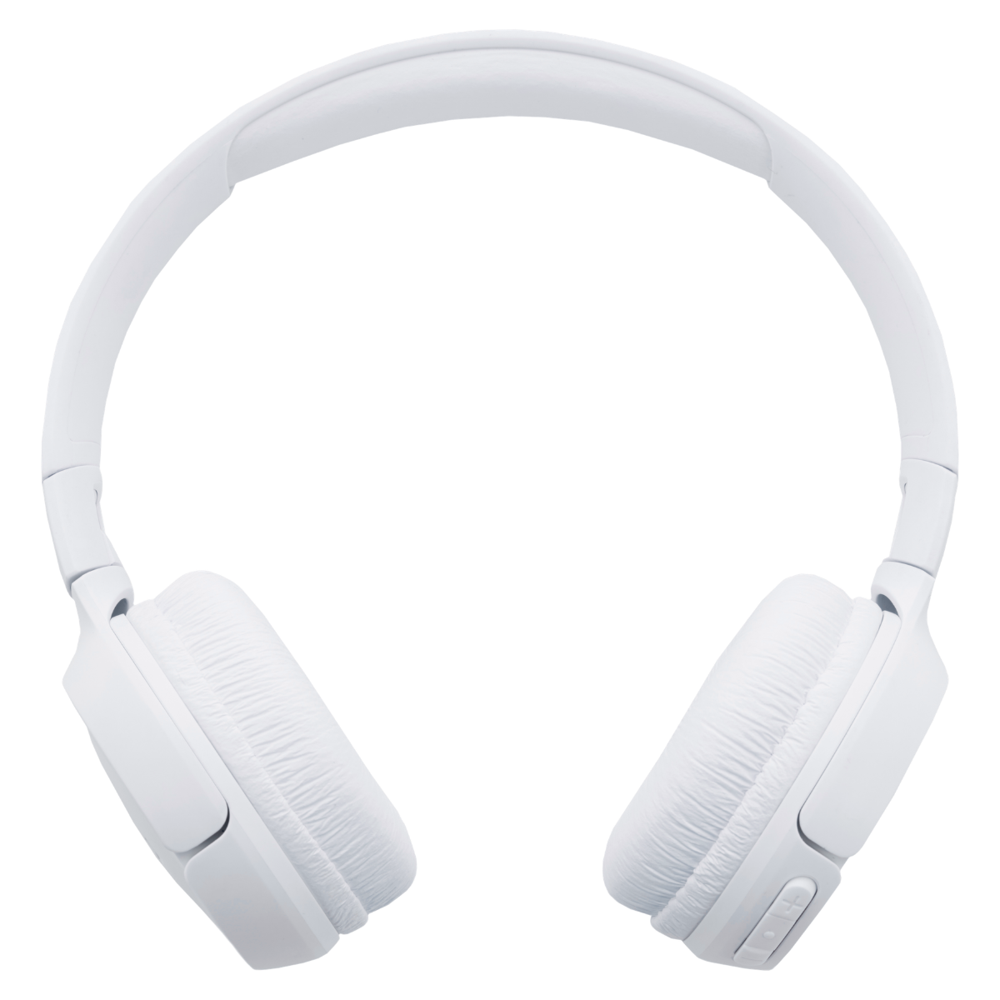
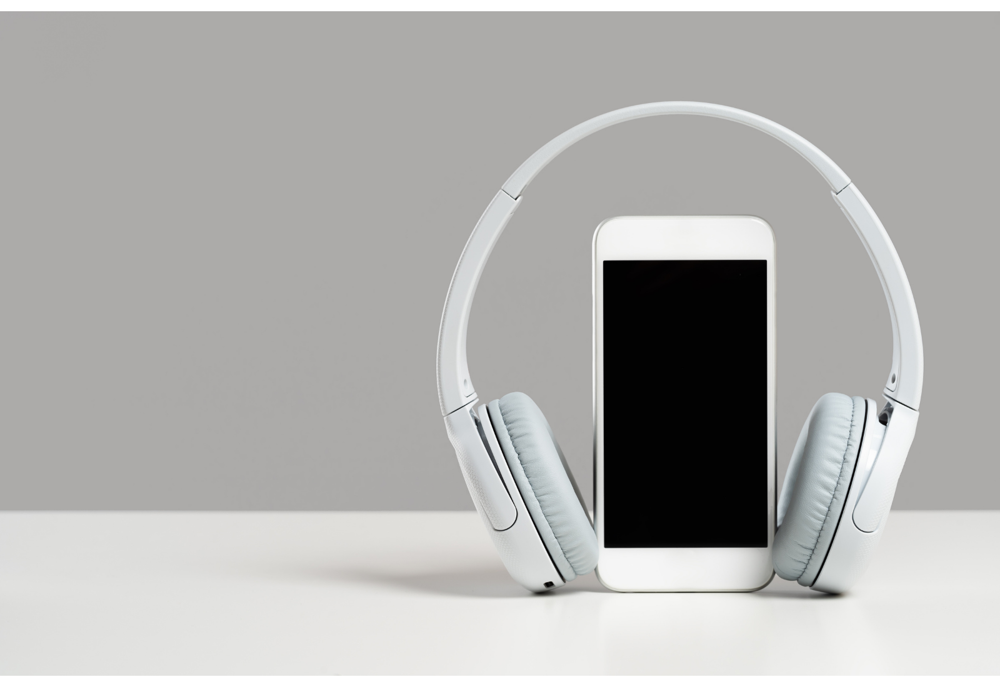

Wireless Headphones
CallClear Model H12
EchoVanta CallClear H12 combines Bluetooth 5.3, active noise cancellation, up to 40 hours of battery life and a foldable design.
- Up to 40 hours of battery life
- Active noise cancellation
- Bluetooth 5.3 and foldable design
Bluetooth 5.3

CallClear Wireless HeadphonesModel H12
Wireless listening setup
Pair and configure CallClear H12
CallClear H12 provides Bluetooth 5.3 connectivity, noise cancellation, a 40-hour battery and foldable storage.
Charge the headphones, enable Bluetooth and hold the power button until the indicator flashes.
Select CallClear H12, test the sound and configure a comfortable listening level.
Product highlights
Connected and focused listening
CallClear H12 combines wireless pairing, noise control, extended battery life and foldable storage.
Bluetooth 5.3
Pair the headphones through the Bluetooth menu of a compatible device.
40-hour battery
The battery provides up to 40 hours of operation, depending on use.
Noise cancellation
Active noise cancellation reduces steady environmental sound.
Foldable design
The earcups fold inward for more compact storage.
Audio configuration
Select the headphones as the audio output and adjust the volume.

Pairing and configuration
Prepare, connect and test
Charge the headphones, enter pairing mode, select CallClear H12 and test audio at a low volume.
- Enter pairing mode
Hold the power button until the indicator flashes.
- Select CallClear H12
Choose the headphones from the available device list.
- Configure listening
Test the audio and use noise cancellation when appropriate.
Main pairing guidance
Select CallClear H12 from the Bluetooth list
Enter pairing mode, select the headphones, wait for confirmation and test the sound.
Wireless standardBluetooth 5.3Phone, tablet or computer
Product details
Product Specifications
Key pairing and listening information for CallClear H12.
| Product name | CallClear |
|---|---|
| Model | H12 |
| Product category | Wireless headphones |
| Battery life | Up to 40 hours |
| Noise control | Active noise cancellation |
| Wireless version | Bluetooth 5.3 |
| Design | Foldable construction |
| Pairing mode | Hold power until the indicator flashes |
| Device selection | Select “CallClear H12” |
| Audio test | Test at a low volume |
| Noise cancellation | Use when environmental awareness remains safe |
| Storage | Switch off, fold carefully and store dry |
| Troubleshooting | Remove the saved pairing and pair again |
| Product code | EV-H12-2026 |
Direct answer
How to pair CallClear H12
Charge the headphones, enter pairing mode, connect, test and configure them.
- 1
Prepare
Charge the headphones, keep them near the device and enable Bluetooth.
- 2
Pair
Hold the power button until the pairing indicator flashes.
- 3
Connect
Select “CallClear H12” and wait for connection confirmation.
- 4
Configure
Test the audio, adjust the volume and enable noise cancellation when safe.
Important information
Listening Safety and Storage
Prepare, use and store CallClear H12 carefully.
Prepare the headphones
- Charge the headphones and check for damage.
- Keep the headphones near the device.
- Enable Bluetooth before pairing.
Listen safely
- Begin at a low volume.
- Remain aware of traffic and alarms.
- Stop using the headphones if discomfort occurs.
Store carefully
Switch the headphones off, fold them correctly and store them in a clean, dry place.
Questions and Answers
Frequently Asked Questions
Find direct answers about CallClear H12 pairing, use and storage.
QWhat is CallClear H12?
A
CallClear H12 is a Bluetooth 5.3 headphone model with noise cancellation, a 40-hour battery and a foldable design.
QHow is pairing mode started?
A
Hold the power button until the pairing indicator flashes.
QHow is the connection completed?
A
Select “CallClear H12” from the Bluetooth device list.
QHow long does the battery last?
A
The headphones provide up to 40 hours of battery life.
QHow is noise cancellation used?
A
Enable it when reduced environmental sound is appropriate and safe.
QWhat should I do if pairing fails?
A
Remove the saved device and repeat the pairing process.
QHow are the headphones stored?
A
Switch them off, fold them carefully and store them in a dry place.